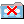

Accepting or rejecting an invitation
Invitations to participate in Activities are automatically inserted in the tree with the icon and its name alongside. This icon indicates that you have not yet accepted (or rejected) the Activity.
If you click on an Activity you have been invited to, an Accept/Reject Wizard will be launched. If you accept the Activity, your correct personal details, which you entered when setting up your Colloquia, are automatically sent to the initiator, so that the e-mail address used is your preferred one. When you are editing your details, you should bear in mind that these will be sent to all participants whenever you accept an Activity.
Before you decide to accept or decline the invitation, you can look at the description and objectives of the Activity, as well as the titles of Resources to be used and the names of other People invited to participate (but not their details). At this stage, these are only displayed in the Main Frame and NOT in the tree.
Every time you
click on the Activity, a dialogue box will be displayed, asking you to accept
or decline the Activity. You can keep closing the box by clicking the Cancel
Button, to give you time to look at the Activity's details. You can do
this by clicking on the various tabs at the top of the Main Frame. Eventually,
though, you will have to reply by clicking on either the Accept or Decline
Button and on either Send Now (to send it immediately) or Outbox
(to store it for sending later).
If you decline
the Activity, the icon will change to .
You may then delete the Activity by selecting Cut Tree Node from the
Edit Menu.
If you accept the
Activity, the icon changes to  .
This indicates that your acceptance has been sent. When the initiator of the
Activity receives your acceptance, they will send an Activity update. When you
receive this, the Activity will become live as indicated by the
.
This indicates that your acceptance has been sent. When the initiator of the
Activity receives your acceptance, they will send an Activity update. When you
receive this, the Activity will become live as indicated by the  icon.
icon.
Examine the Activity by selecting its various contents (you can open and close an Activity by double clicking on it like any other folder).